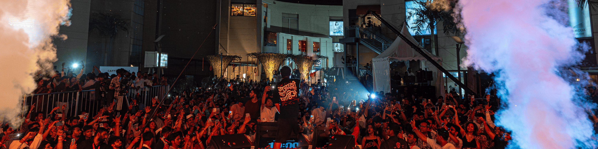
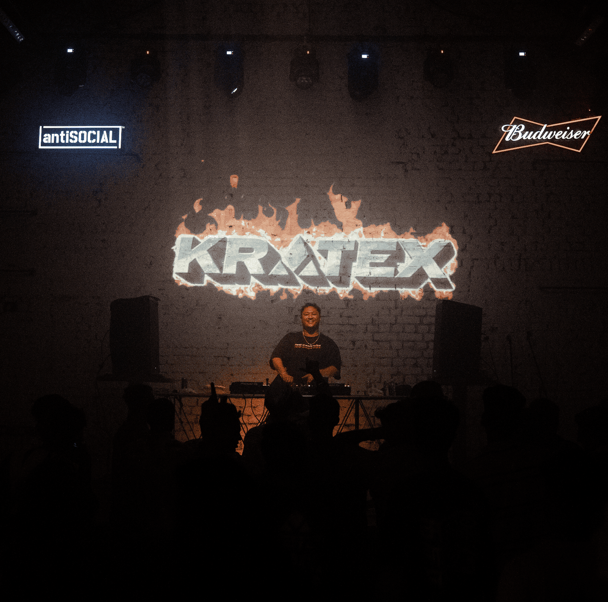

About Kratex


Kratex (Krunal Ghorpade) is a Mumbai-based Marathi house music DJ and producer. He developed M-House by bringing Marathi vocals, rhythms and cultural references into house, tech-house and techno. Mid-Day and The Indian Express have covered his role in the Marathi house scene.
With rapper Shreyas, Kratex created Taambdi Chaamdi. Rolling Stone India reported that it was the first Marathi song featured on Spinnin’ Records’ official channel. The KSHMR remix later appeared in Netflix’s 2026 film Best of the Best, as Mid-Day reported.
Kratex’s debut album FAKTA HOUSE expands his Marathi-rooted house sound across twelve tracks. His live sets and original releases span house, tech-house and techno. All About Music reports that he completed a sold-out seven-city USA tour, alongside performances across India and other international markets.
Explore Kratex as an Indian house music DJ, a Marathi DJ and music producer, the M-House pioneer, and an artist bringing Marathi house music to global audiences.
DOWNLOAD KRATEX PRESS KIT ↗ MORE PRESS INFO: PRESS.KRATEX.IN ↗